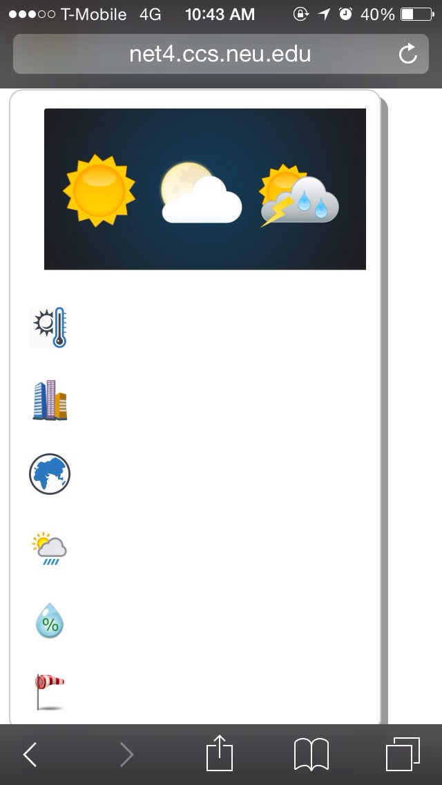
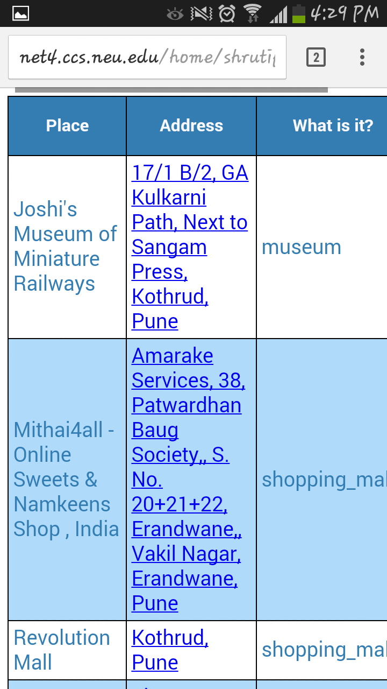
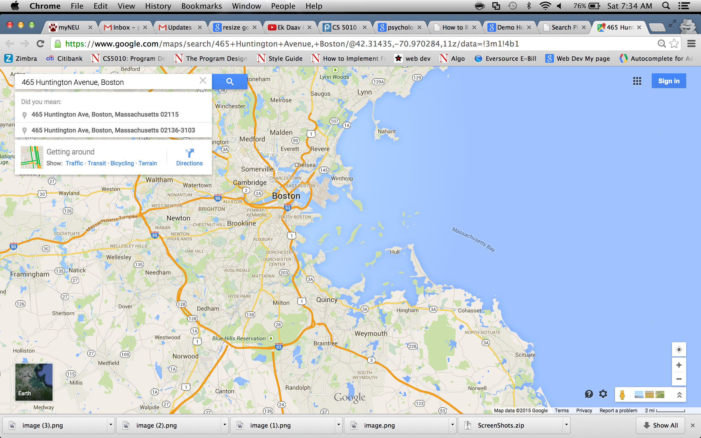
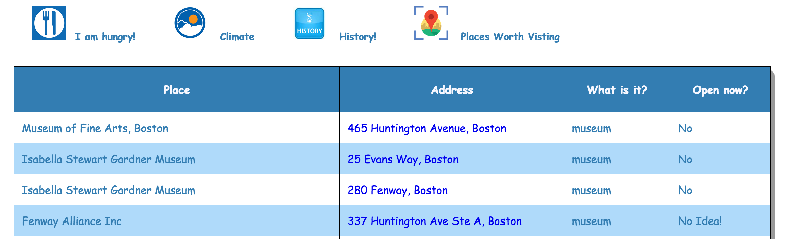
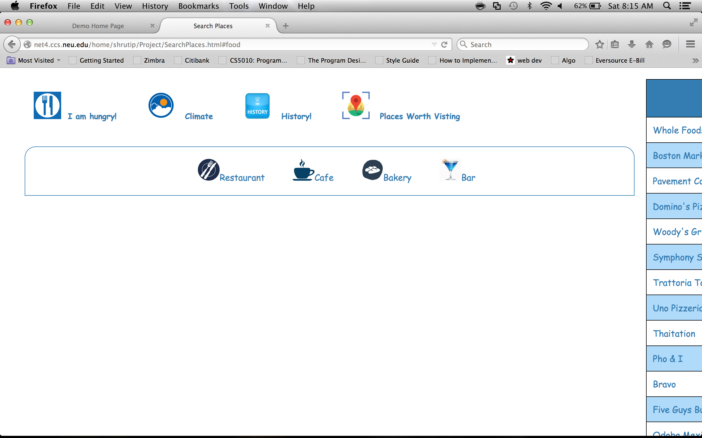
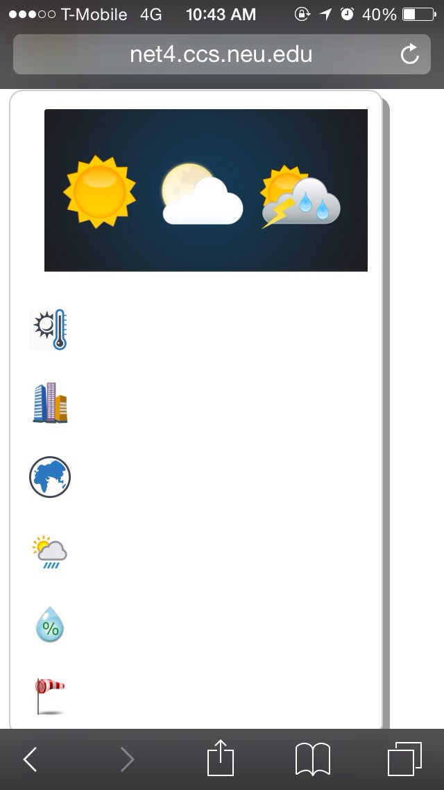
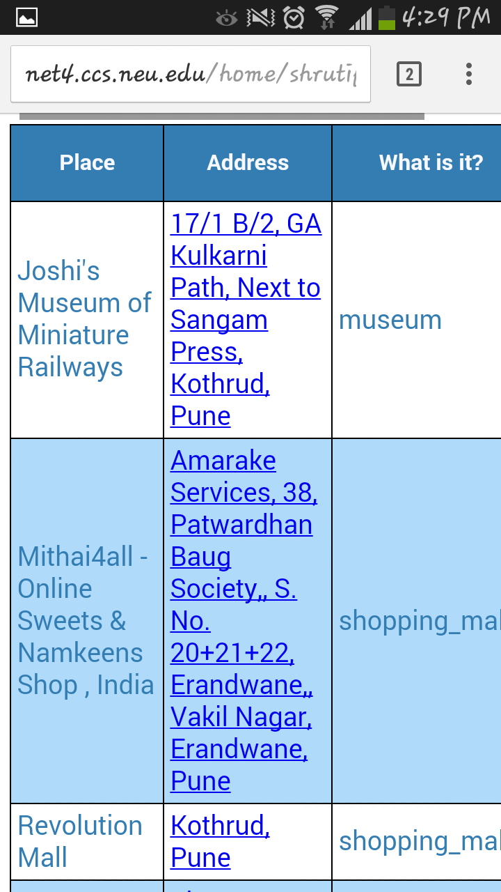
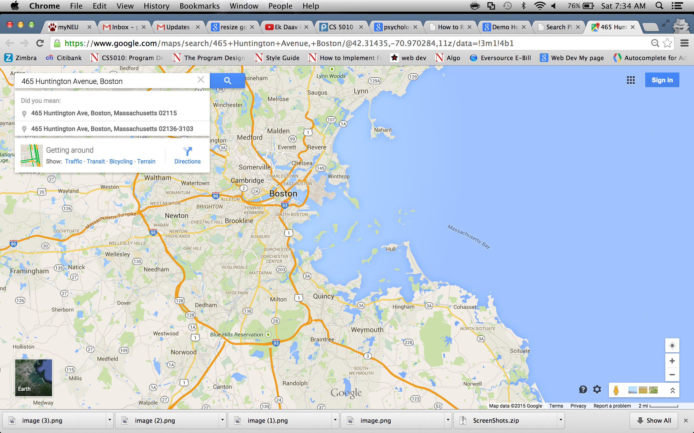
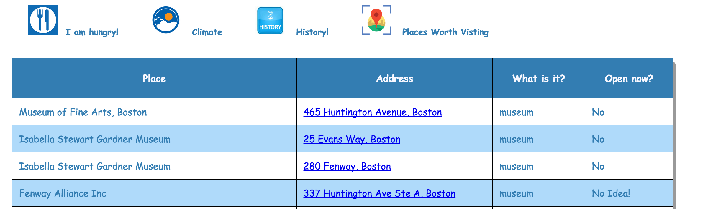
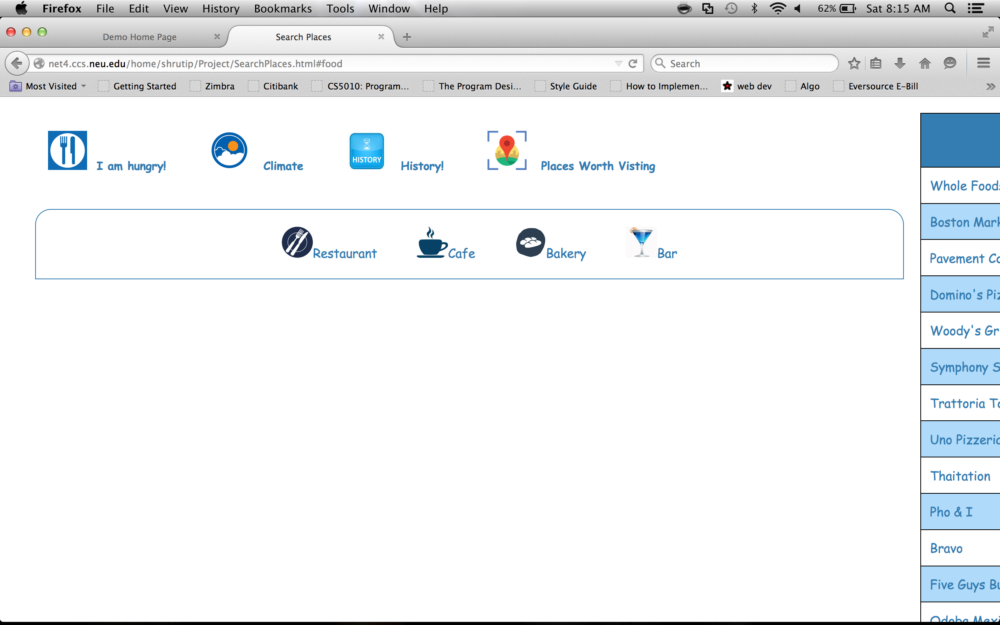

Bug List
- It takes time for Climate data to appear sometimes. Somehow, thereby, the screen appears unloaded. Kindly refer the screenshot below. This behavior is not reproducible. It happens sometimes.
- For cell phone usage, I have not been able to make the table related to places Worth visting appear very properly. Since, I want to show the data related to Name, Address, Rating and if its currently open, it somehow may appear very clumped up. I am working on it to fix it.
- Maps that open after clicking on a address do not center the location sometimes. If Goole cannot find the place based on the address provided, it ends up showing a hovering map of Boston (wherever the user is located)
- The images that appear relevent to the search of places, slide show all the images only once. (No screenshot for this bug)
- Another bug, which I just found yesterday, was when I reached the daily limit by google Places API during testing. I could not get an appropriate error message and had to debug as to why the table did not get populated (No screenshot for this bug)
- If a place exists in the Google Places API JSON object twice, the table is loaded with both values. This bug may not be reproducible always. It depends on the location of the user. In the screen shot given below, Isabella Stewart Gardner Museum appears twice, since its entrace has changed to open to the other road. I am working on this bug. However, it may alter the speed with which the results are based, since before I put it in a table I need to always check if that name already does not exist. And this case is very rare that two places with same name and different address may appear. I will try and search for a work around of this bug.
- Mozilla Firefox faces an issue while rendering the Search Places page. The table appears to move out of the screen. I am trying to fix the CSS for the same. Although Chrome, Safari and IE render everything perfectly, I took time to look into this error but havnt been able to resolve it. Please see the screenshot for more details
Bug Screenshots
Climate Bug:

Cell Table for Places Worth Visting :

Map bug :

Place appearing twice bug :

Rendering in Firefox Bug :


Cell Table for Places Worth Visting :

Map bug :

Place appearing twice bug :

Rendering in Firefox Bug :
